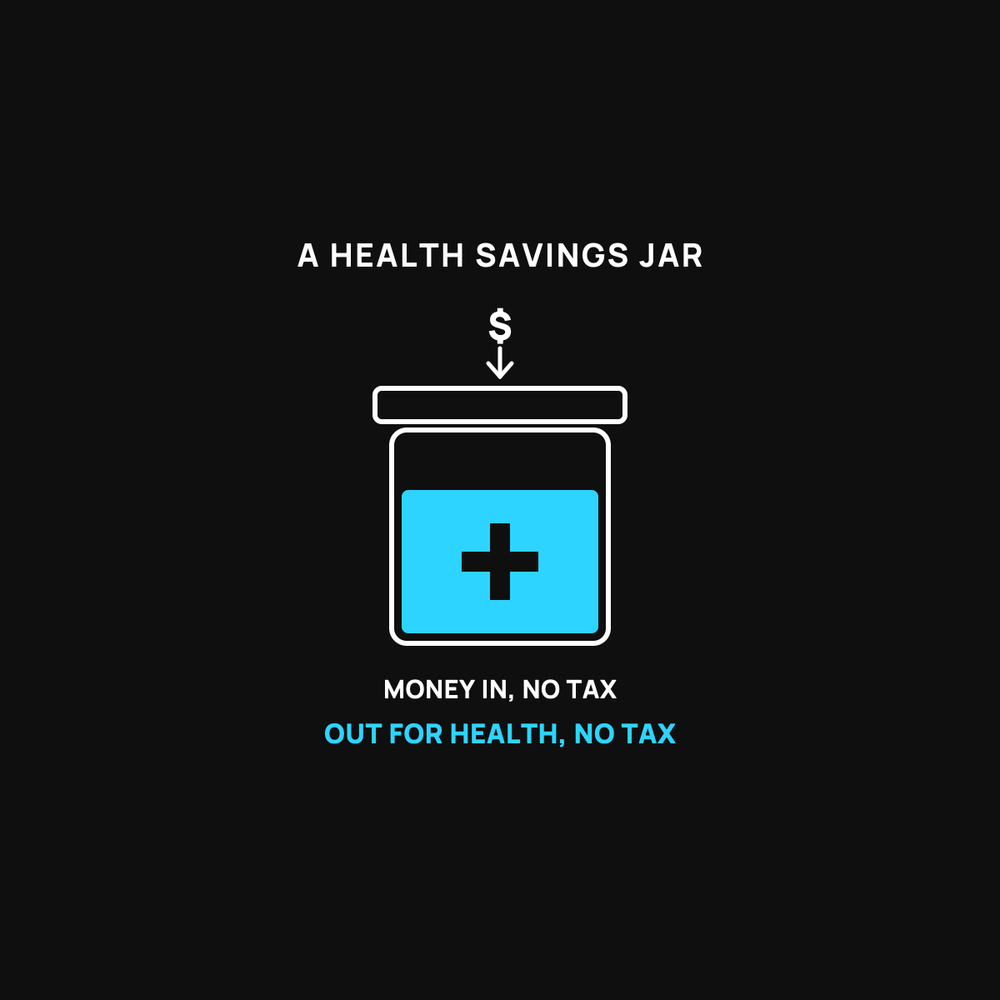

What an HSA Actually Is (and Who It's For)
A health-only savings jar the tax man doesn't touch. If it fits you.
A Health Savings Account is a jar for health costs that the tax man doesn't touch. Money goes in untaxed, comes out untaxed when spent on health care, and rolls over year to year as your own money. The catch: you need a high-deductible health plan to open one, so the two come as a pair.

An HSA is one of the most useful money tools most people barely understand. The name is forgettable: Health Savings Account. But the idea is simple and genuinely helpful, if it fits your situation. Here's the plain version, including the honest catch about who can actually use one.
A special jar the tax man doesn't touch
Picture a jar on your counter labeled "health." You put money in it, and here's the magic: the government agrees not to tax the money you put in that jar. Normally, money you earn gets taxed before you ever see it. Money you route into this jar skips that. Then, as long as you spend it on health stuff, doctor visits, prescriptions, dental, and the like, it comes back out untaxed too.
Money in, no tax. Money out for health, no tax. That's a rare deal. Most jars get taxed on one end or the other. This one dodges both, which is why people who know about it love it.
It's your money, and it doesn't disappear
Here's a point that trips people up, because there's a different thing that sounds similar and works the opposite way. An HSA is not use-it-or-lose-it. Whatever you don't spend rolls over year after year, and it's yours to keep, even if you change jobs. It's a savings account with your name on it, not a benefit that vanishes each December.
That means it can quietly grow into a real cushion for health costs over the years, which matters, because health costs are one of the big surprises that knock people off track.
The honest catch: who can actually open one
Now the part the cheerful articles skip. You can't just open an HSA because you feel like it. You have to be on a specific kind of insurance plan first: a high-deductible health plan. That's a plan with a lower monthly bill but a bigger deductible, meaning you pay more of the early costs yourself before the plan kicks in. If you're fuzzy on what a deductible is, I explained it plainly here.
So the HSA and the high-deductible plan come as a pair. That pairing is great for some people and wrong for others. It tends to fit healthier folks who don't rack up a lot of medical bills, because they get the low monthly cost and the tax-free jar, and rarely hit that big deductible. It fits worse for people with steady, heavy medical needs, who would feel that high deductible often.
How to actually use it well
If you qualify and it fits, two simple moves. Put money in regularly, even a little, so the jar builds. And since you're on a high-deductible plan, get in the habit of asking the cash price for care, because you're paying those early costs yourself. That one habit stretches the jar further. I covered it here.
The takeaway
An HSA is a health-only savings jar the tax man doesn't touch: money in untaxed, money out for health untaxed, and it rolls over as your own money. The catch is you need a high-deductible health plan to open one, so it's a pair, and that pair fits healthier people better than those with heavy ongoing costs. If it fits you, it's one of the best deals in personal finance. If it doesn't, now you know why, and that's worth knowing too.
Questions I get about this
Is an HSA use-it-or-lose-it?
No. That's a different thing (a flexible spending account) that sounds similar and works the opposite way. Whatever you don't spend in an HSA rolls over year after year, and it's yours to keep even if you change jobs.
Who should get an HSA?
It tends to fit healthier people who don't rack up a lot of medical bills. They get the low monthly premium of the high-deductible plan plus the tax-free jar, and rarely hit the big deductible. It fits worse for people with steady, heavy medical needs who would feel that deductible often.
Can I have an HSA with health sharing?
Generally no, because an HSA requires a qualifying high-deductible insurance plan, and health sharing isn't insurance. If you already have an HSA balance, it stays yours and you can keep spending it on health costs. Rules change, so check current guidance.
(Amounts and rules change year to year, so check the current figures before you set one up. I share what I've learned, not tax advice.)
New here?
Normaltown USA is plain-English money and healthcare help for normal people, written by a regular guy with a family of four. No jargon, no hype. Start here, or read the FAQ.